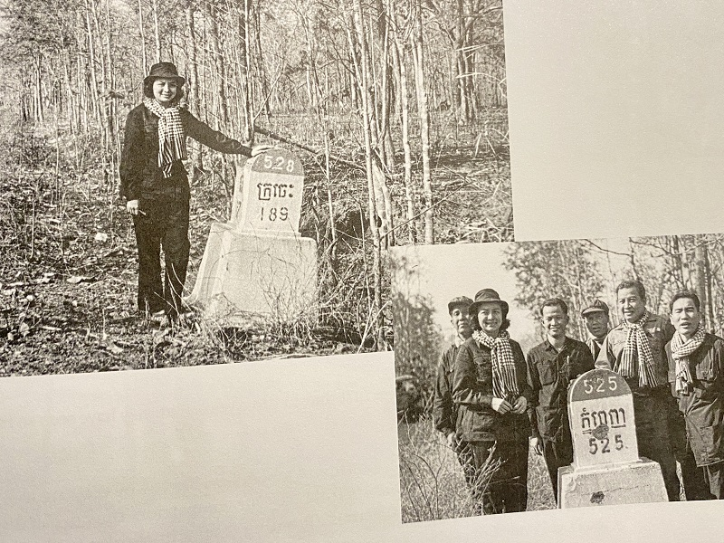
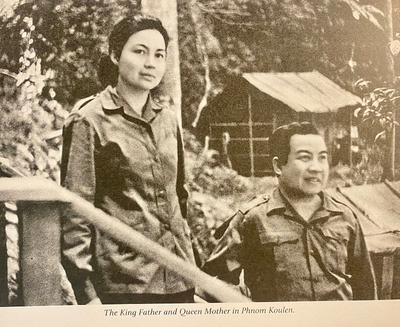

ចូលប្រឡូកក្នុងអាជីពជាមគ្គុទ្ទេសក៍នៅឆ្នាំ២០០២ គឺអំឡុងពេលនៅជាគ្រូបង្រៀនភាសាបារាំង នៃវិទ្យាល័យអង្គរនៅឡើយ។ ពេលនោះលោកស្រីឆ្លៀតពេលទំនេរមកដើរនាំភ្ញៀវ ព្រោះតែការស្រឡាញ់ ចូលចិត្ត អាជីពជាអ្នកបកស្រាយប្រវត្តិសាស្រ្តនេះ។ លោកស្រី សេដ្ឋាវី ប្រាប់អ្នកសារព័ត៌មានឌីជីថលថ្មីៗដូច្នេះថា៖« នៅខេត្តសៀមរាបមានប្រាសាទច្រើន ខ្ញុំចង់ឱ្យបរទេស ដឹងថា តើអារ្យធម៌ខ្មែរយើងពីសម័យដើមមានភាពរុងរឿងបែបណាខ្លះ ដែលបានកសាងប្រាសាអង្គរបាន និងខាងសិល្បៈ ស្ថាបត្យកម្មក៏ដូចគ្នា ចង់ឱ្យគេដឹងពីយើង»។
ដើម្បីលើកទឹកចិត្តដល់សមាជិកដែលកំពុងរស់នៅតស៊ូក្នុងតំបន់រំដោះផង និងដើម្បីបង្ហាញទៅពិភពលោកអំពីទិដ្ឋភាពនៃការតស៊ូផងនោះ សម្ដេចព្រះនរោត្តម សីហនុ បានប្រាប់ថ្នាក់ដឹកនាំនៃរដ្ឋាភិបាលរួបរួមជាតិកម្ពុជានៅប្រទេសកម្ពុជាដែលជាមេដឹកនាំកំពូលនៃចលនាខ្មែរក្រហម រួមមាន ខៀវ សំផន អៀង សារី ជាដើម ថាព្រះអង្គចង់យាងមកកាន់តំបន់រំដោះក្នុងប្រទេសកម្ពុជា។ ប៉ុន្តែថ្នាក់ដឹកនាំនៃក្រុមចលនាខ្មែរក្រហមពុំព្រមចង់ឱ្យព្រះអង្គយាងមកឡើយ ដោយបានលើកឡើងអំពីបញ្ហាសុវត្ថិភាពរបស់ព្រះអង្គ។ ក្រុមមេដឹកនាំនៃចលនាខ្មែរក្រហម ដែលមានលោក ខៀវ សំផន ជាឧបនាយករដ្ឋមន្ត្រីនៃរដ្ឋាភិបាលរួបរួមជាតិកម្ពុជានាពេលនោះ បានសរសេរថ្វាយសម្តេចព្រះនរោត្តម សីហនុ ថា ការធ្វើដំណើរមកតំបន់រំដោះក្នុងប្រទេសកម្ពុជា គឺមានតែការធ្វើដំណើរតាមផ្លូវលំហូ ជីមិញ ដ៏គ្រោះថ្នាក់ដោយការទម្លាក់គ្រាប់បែករបស់កងទ័ពសហរដ្ឋអាមេរិក។
ក្រោយពីមានការរារាំងពីលោក ខៀវ សំផន ផង និងក្រោយមកពីលោក អៀង សារី ផង មិនឱ្យសម្ដេចព្រះនរោត្តម សីហនុ និងអ្នកម្នាងយាងមកតំបន់រំដោះ សម្ដេចព្រះនរោត្តម សីហនុ បានគំរាមលាលែងពីព្រះប្រមុខរដ្ឋនៃរដ្ឋាភិបាលរួបរួមជាតិ។ ទីបំផុត លោក ខៀវ សំផន, លោក អៀង សារី និងមេដឹកនាំដទៃទៀតយល់ព្រមរៀបចំព្រះរាជដំណើររបស់សម្តេចព្រះប្រមុខរដ្ឋ និងអ្នកម្នាងចូលមកទឹកដីកម្ពុជានៅក្នុងខែមីនាឆ្នាំ១៩៧៣។
ប៉ុន្តែការចាកចេញដំណើរពីទីក្រុងប៉េកាំងបានចាប់ផ្តើមតាំងពីថ្ងៃទី២២ខែកុម្ភៈ ឆ្នាំ១៩៧៣ ដោយមានការជូនដំណើរពីសំណាក់លោកនាយករដ្ឋមន្ត្រី ជូ អេនឡាយ និងភរិយាដោយផ្ទាល់ និងលោក ប៉ែន នុត និងភរិយាផងដែរ។ សំណៅកំណត់ហេតុរបស់ព្រះមហាក្សត្រី បានចាប់ផ្តើមនៅពេលនេះហើយ។
«ការចេញដំណើររបស់ពួកយើងត្រូវបានរៀបចំឡើងយ៉ាងសម្ងាត់បំផុត។ សូម្បីតែបុត្រាទាំង២គឺព្រះអង្គម្ចាស់ សីហមុនី និងព្រះអង្គម្ចាស់នរិន្ត្រាពង្ស ដែលកំពុងសិក្សានៅក្នុងទីក្រុងប្រាក និងម៉ូស្គូ ក៏ពុំដឹងអំពីដំណើររបស់យើងនេះដែរ។»។ នេះសំណៅកំណត់ហេតុដំបូងរបស់អ្នកម្នាងនាពេលនោះ។
បើគេអានសៀវភៅកំណត់ហេតុនេះ គេនឹងដឹងថា សម្ដេចព្រះនរោត្តម សីហនុ និងអ្នកម្នាងបានយាងដំណើរពីទីក្រុងប៉េកាំងមកទីក្រុងហាណូយ ហើយគឺនៅហាណូយរយៈពេល៥ថ្ងៃនោះហើយ ដែលដំណើររបស់សម្ដេចព្រះនរោត្តម សីហនុ និងអ្នកម្នាងត្រូវបានរៀបចំយ៉ាងហ្មត់ចត់ ដោយមានការជូនអមដំណើរពីលោក អៀង សារី ផង និងប្រតិភូវៀតណាមជាអ្នកនាំផ្លូវផង។
ដោយមិនរាប់ពីការចេញដំណើរតាមយន្តហោះពីទីក្រុងប៉េកាំង និងការស្នាក់នៅរយៈពេល៥ថ្ងៃនៅទីក្រុងហាណូយនោះទេ ការចាប់ផ្តើមដំណើរមែនទែនតាមផ្លូវលំ ហូ ជីមិញ របស់សម្ដេចព្រះប្រមុខរដ្ឋ និងអ្នកម្នាង មានរយៈពេល៩ថ្ងៃ មុនប្រតិភូមេដឹកនាំកំពូលនៃរដ្ឋាភិបាលរួបរួមជាតិកម្ពុជាមកដល់ដីខ្មែរនៅចំណុចអូតាង៉ាវដែលខណ្ឌចែកទឹកដីឡាវ និងកម្ពុជា។ ក្នុងរយៈពេល៩ថ្ងៃមកនេះ ការធ្វើដំណើរត្រូវបានធ្វើឡើងភាគច្រើននាពេលយប់ ក្នុងស្ថានភាពផ្លូវដ៏ហុយទ្រលោម និងដ៏រលាក់ផង ដើម្បីគេចផុតពីការពើបប្រទះរបស់យន្តហោះទម្លាក់គ្រាប់របស់សត្រូវ។ យោងតាមកំណត់ហេតុនោះ បើទោះជាពេលខ្លះ អ្នកម្នាងរំភើប ស្ញប់ស្ញែងនឹងទេសភាពដ៏ត្រកាលនៃតំបន់ជួរភ្នំក្នុងប្រទេសឡាវក៏ពិតមែន ប៉ុន្តែទាំងសម្ដេចព្រះប្រមុខរដ្ឋ និងអ្នកម្នាង បន់ស្រន់ឱ្យតែឆាប់ដល់មាតុភូមិតែប៉ុណ្ណោះ។
ថ្ងៃទី៧ខែមីនាឆ្នាំ១៩៧៣ ព្រះប្រមុខរដ្ឋ និងអ្នកម្នាងបានយាងមកដល់ដីខ្មែរជាថ្មីក្រោយពីអវត្តមានចំនួន៣ឆ្នាំ ហើយអ្នកម្នាងបានសរសេរយ៉ាងដូច្នេះ៖«នេះជាការវិលត្រឡប់មកដល់មាតុភូមិជាទីស្រឡាញ់របស់ពួកយើងវិញ។ នេះជាពេលវេលាដែលខ្ញុំនឹងចងចាំទុកក្នុងចិត្តជានិច្ច។ យើងបានឆ្លងទន្លេអូតាង៉ាវដែលជាទន្លេខណ្ឌចែកទឹកដីរវាងប្រទេសឡាវ និងកម្ពុជា នៅម៉ោង១០ព្រឹក។ យើងពិតជារីករាយណាស់ដែលបានត្រឡប់មកដល់ទឹកដីខ្មែរវិញ ដោយមានការស្វាគមន៍ពីឯកឧត្តម ហ៊ូ នឹម រដ្ឋមន្ត្រីព័ត៌មាននៃរដ្ឋាភិបាលរួបរួមជាតិកម្ពុជា, ឯកឧត្តម សុន សេន មេបញ្ជាការកងទ័ពរំដោះ និងថ្នាក់ដឹកនាំដទៃទៀត។»។
យោងតាមកំណត់ហេតុនោះ ក្រោយពីបានស្វាគមន៍គ្នាដោយក្ដីរំភើបហើយនោះ សម្ដេចព្រះប្រមុខរដ្ឋបានយកកន្សែងដៃកើបខ្ចប់ដីមកថើបទៀតផង។
២៣ថ្ងៃក្រោយមក ពោលគឺថ្ងៃទី៣០ខែមីនាឆ្នាំ១៩៧៣នោះ បន្ទាប់ពីបានជួបសន្ទនាជាមួយសមាជិកអ្នកតស៊ូ មេដឹកនាំរដ្ឋាភិបាលរួបរួមជាតិកម្ពុជា និងបានទស្សនកិច្ចទីតាំងសំខាន់ៗមួយចំនួនហើយ សម្ដេចព្រះប្រមុខរដ្ឋ និងអ្នកម្នាងបានយាងត្រឡប់មកដល់អូតាង៉ាវនេះជាថ្មី ដើម្បីចាកចេញពីមាតុភូមិរបស់ព្រះអង្គវិញ៕